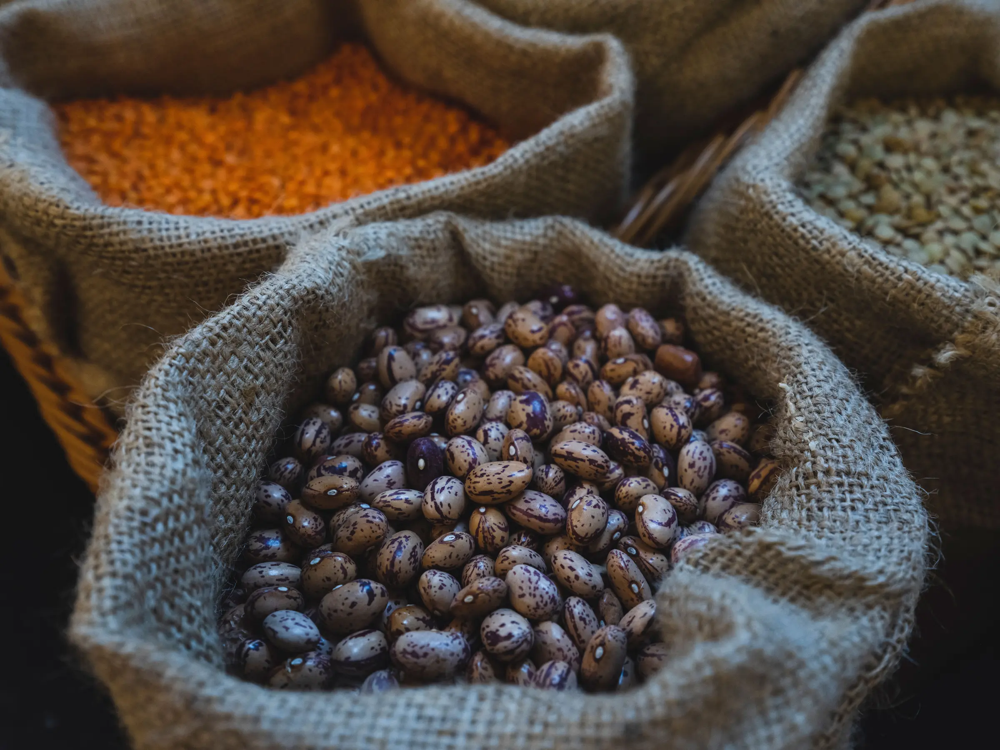
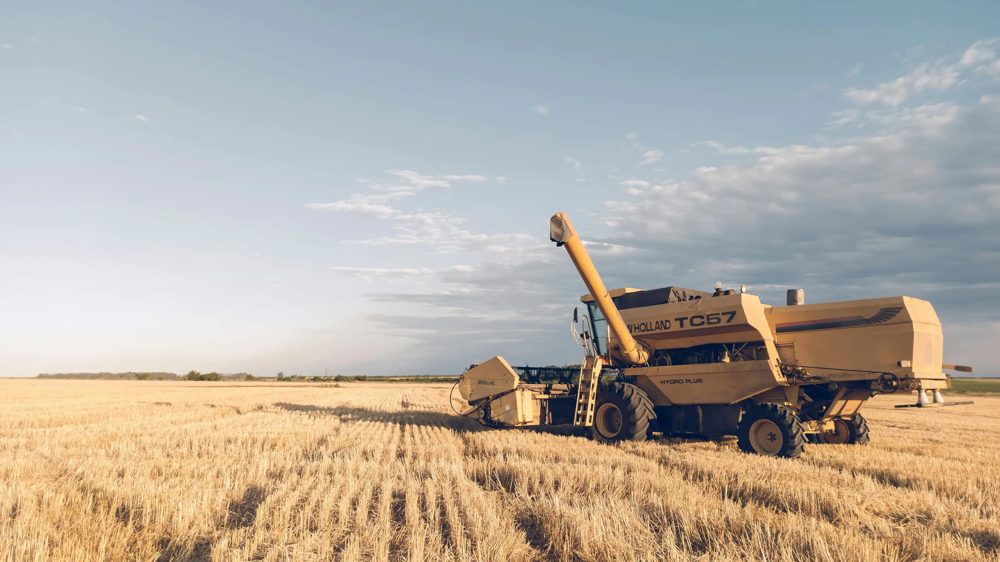
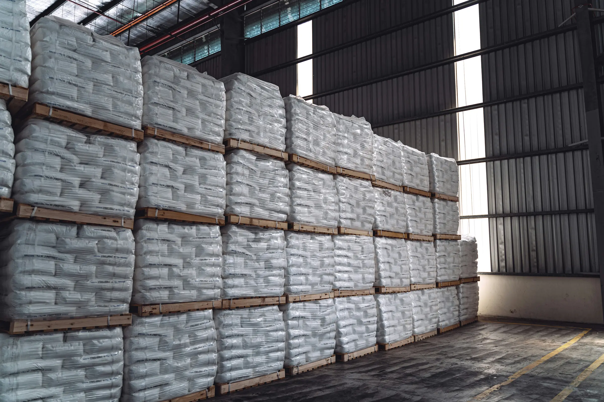

Live demonstration
Global precipitation map
See recent and predicted precipitation move across major agricultural regions.
Explore the map →Food and economic security through better decisions
Food Aid Project connects agriculture, weather, markets, logistics, technology and people—helping organizations understand changing conditions, use resources wisely and build lasting capacity.


What we do best
Make complex weather, crop and market information easier to understand.
Help people compare choices without making decisions for them.
Improve sourcing, transportation and use of limited resources.
Put useful knowledge and tools within reach of more people.
Technology that helps people help people
Powerful technology should not be available only to powerful organizations.
Food Aid Project designs practical decision-support tools to help farmers, food organizations and communities understand difficult situations, consider their options and make better choices more often.
People remain at the center. Technology can make complex information easier to understand, but it does not replace local knowledge, professional expertise, human responsibility or the connection between people.
Weather & agricultural intelligence
Weather shapes crops, supply, transportation and food security.
This rotating global precipitation view makes those connections visible. It shows recent and predicted conditions across major agricultural regions—one practical example of how better information can support earlier decisions.
Global precipitation map: radar is used where available, with modeled precipitation elsewhere. For local hazards and warnings, consult the relevant official weather service.
Explore now
Food Aid Project is still building. These public tools, demonstrations and records are practical places to begin.
Live demonstration
See recent and predicted precipitation move across major agricultural regions.
Explore the map →Planning tool
Explore products and quantities for a possible mixed load of staple foods.
Open the builder →Intake available
Share your skills and interests through the Service Corps questionnaire.
Explore the Service Corps →Public records
Review Food Aid Project’s IRS determination letter and dated public records.
Review the records →Connected areas of work
Each program remains distinct. These pathways simply make it easier to understand how the work fits together.
Move food smarter
We bring experience in bulk food, procurement, delivered cost and transportation to problems that can quietly consume charitable resources.
Explore food and logistics programs →See risk sooner
Geospatial tools, weather intelligence, crop monitoring and market knowledge can help organizations act before a problem becomes a crisis.
Explore intelligence and technology →Build capability
Food Aid Project develops partnerships and expands access to useful information, practical tools and skilled support—strengthening the people already doing the work.
Explore the Service Corps →How it connects
Select a point in the model to follow that part of the work.
Interactive model Follow the connections

From production to access
Every decision between field, market and destination can change how far limited resources reach.

Program portfolio
Open any program for a plain-English description and its current status.
Bulk-food access and mixed-load planning intended to help food banks consider products, quantities and transportation together.
Explore Food Bank Supply ↗A distinct humanitarian food-access initiative within the broader Food Aid Project portfolio.
Explore Zèl Zanj ↗Practical ways to consider sourcing, delivered cost, freight, timing and destination together.
Explore food access and logistics ↗Price discovery and market pathways connecting agricultural knowledge with the needs of farmers, processors, buyers, NGOs and food organizations.
Explore the portfolio ↗Decision support connecting weather hazards, forecasts and agricultural conditions with logistics, food access and earlier action.
Explore the technology direction →Crop geography, development, field intelligence, yield prediction, Farm Pro, ground truth and proposed country-level pilots.
Explore intelligence and technology ↗Mission-focused pathways that help organizations explore useful weather, crop and decision-support tools.
Explore technology access ↗Research partnerships, methods, validation, learning and opportunities to connect academic knowledge with food-system needs.
Explore research partnerships ↗Remote, skills-first service connecting professional knowledge, research, outreach, mentoring and eligible community service with mission needs.
Explore the Service Corps ↗Portfolio note: Oatmeal 4 Hope is paused/canceled. Pureza, grantmaking, expanded food-flow intelligence and other initiatives will be published only when their current boundaries are verified.
Why Food Aid Project exists
Food Aid Project began with a simple observation: nonprofit food buyers did not always have the same information, relationships and tools available to experienced commercial buyers.
The organization was created to transfer useful knowledge, improve access and help capable organizations make stronger procurement and transportation decisions.
Read the Food Aid Project story →Clear about our progress
Open the public tools, view the map and see the four connected areas Food Aid Project is developing.
See current progress →Review Food Aid Project’s nonprofit documents, governance information and fundraising commitments.
Review trust and transparency →Work with us
We are building relationships with food banks, NGOs, farmers, processors, freight providers, researchers, universities, governments, foundations, volunteers and technology partners.